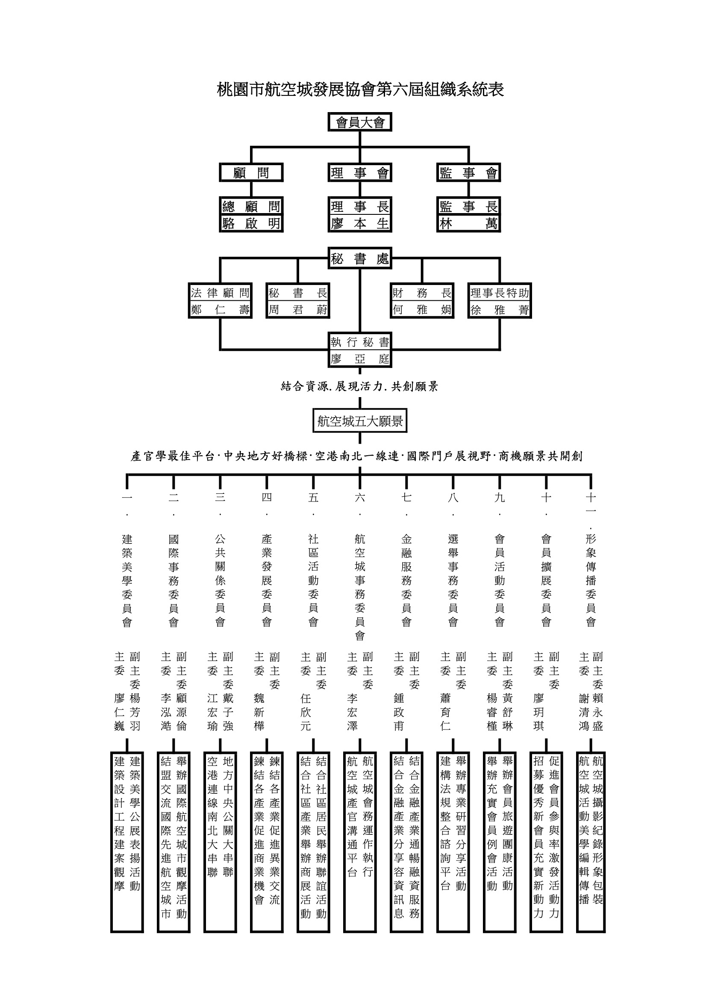
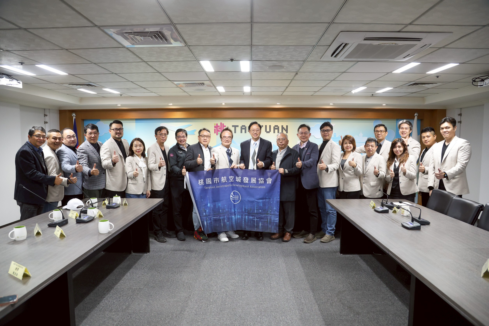
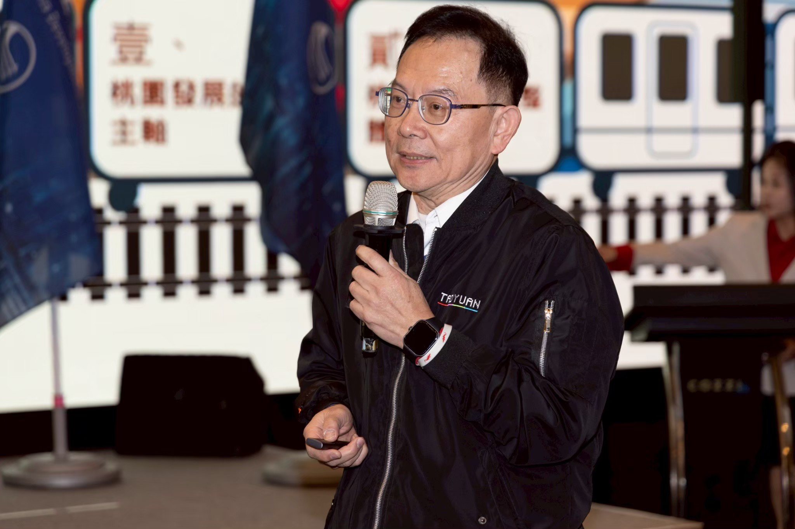

桃園市航空城發展協會Taoyuan Aerotropolis Development Association
第六屆理事長暨理監事委員會
就職典禮
2026.03.22
- 封面
- 緣起
- 1. 會員大會程序表
- （一）桃園市航空城發展協會理事長致詞
- （二）貴賓致詞
- - 桃園市市長張善政致詞
- - 桃園市議長邱奕勝致詞
- - 總顧問駱啟銘致詞
- - 桃園市航空城公司前董事長王義川致詞
- - 本會創會理事長黃德華致詞
- - 本會監事長林萬致詞
- 桃園市航空城發展協會115年度工作計畫書
- 一、航空城組織系統表
- 二、航空城五大願景
- 三、航空城年度工作計畫
- 桃園市航空城發展協會理監事年度贊助芳名錄
- 桃園市航空城發展協會委員會年度贊助芳名錄
- 桃園市航空城發展協會活動剪影
- 桃園市航空城發展協會組織章程
作為臺灣門戶城市，桃園國際機場位處國際物流運籌優勢區位，也是亞太城市連結的核心戰略位置。桃園國際機場同時擁有緊鄰臺北港的龐大海運腹地，完整便捷的高速公路、高速鐵路以及機場捷運網路系統。
因應第三跑道興建需求，必須取得土地的需要，「桃園航空城計畫」透過都市計畫程序，重新調整機場周圍的土地使用，提升桃園國際機場的競爭力，也促進桃園整體發展，並帶動臺灣產業轉型及國際化。
非常榮幸在此躬逢其盛，桃園市航空城發展協會新任第六屆，期待能承先啟後，結合資源！展現活力！共創願景！
一、桃園市航空城發展協會第六屆組織系統表

二、航空城五大願景
結合資源.展現活力.共創願景
- 1. 產官學最佳平台
- 2. 中央地方好橋樑
- 3. 空港南北一線連
- 4. 國際門戶展視野
- 5. 商機願景共開創
三、工作計劃
桃園市航空城發展協會
115工作計畫大綱
| 類別 | 工作項目及實施辦法 | 預定進度 |
|---|---|---|
| 壹、會議 | 1. 召開會員大會 | 十二月份舉辦 |
| 2. 理監事聯席會 | 每月召開一次(併辦職業參訪或例會) | |
| 3. 必要時召開各種臨時會議 | 視實際需要舉行 | |
| 貳、財務 | 1. 各項經費收支、登帳、核銷工作 | 適時辦理 |
| 2. 編列下年度經費預算 | 10月份辦理 | |
| 3. 整理上年度經決算報告 | 1月份辦理 | |
| 4. 收取會費、採購、出納及管理及其他收入 | 隨到隨辦 | |
| 參、活動 | 1. 產業拜訪(公關拜訪) | 不定期舉辦 |
| 2. 理監事聯席會 | 每月(併辦職業參訪或例會) | |
| 3. 職業參訪 | 每半年 | |
| 4. 全會員例會活動 | 每三個月 | |
| 5. 舉辦會外公關聯誼活動 | 1.就職典禮 | |
| 6. 參與各項機關社團活動 | 2.職業參訪 | |
| 7. 構築產官學最佳互動平台 | 3.年度旅遊 | |
| 8. 舉辦、協辦各種產業論壇 | 4.會員大會 | |
| 9. 舉辦金融專業論壇活動協助產業金融業務 | ||
| 10. 舉辦會內聯誼活動 | ||
| 11. 關心會員,參與婚喪喜慶 | ||
| 12. 宣揚本會宗旨與會務吸收新會員 | ||
| 13. 其他 |
桃園市航空城發展協會理監事年度贊助芳名錄
| 職稱 | 姓名 | 金額 (NT$) |
|---|---|---|
| 理事長 | 廖本生 | 100,000 |
| 副理事長 | 謝智淵 | 50,000 |
| 邱芳琅 | 50,000 | |
| 常務理事 | 周淑真 | 40,000 |
| 任怡賓 | 40,000 | |
| 房麗珠 | 40,000 | |
| 簡木川 | 40,000 | |
| 理事 | 徐景文 | 20,000 |
| 蔡志勇 | 20,000 | |
| 張指温 | 20,000 | |
| 呂榮輝 | 20,000 | |
| 康博超 | 20,000 | |
| 楊海霞 | 20,000 | |
| 李浚霆 | 20,000 | |
| 林宗德 | 20,000 | |
| 徐玉郎 | 20,000 | |
| 吳文輝 | 20,000 | |
| 陳增逢 | 20,000 | |
| 林昀霏 | 20,000 | |
| 陳清淮 | 20,000 | |
| 孫志堅 | 20,000 | |
| 臧真豪 | 20,000 | |
| 蔡旭坤 | 20,000 | |
| 湯柏齡 | 20,000 | |
| 陳昌楙 | 20,000 | |
| 候補理事 | 簡文金 | 12,000 |
| 田雅華 | 12,000 | |
| 黃荺婭 | 12,000 | |
| 監事長 | 林萬 | 50,000 |
| 常務監事 | 劉立宏 | 40,000 |
| 監事 | 簡材安 | 20,000 |
| 韓大富 | 20,000 | |
| 方孜嘉 | 20,000 | |
| 張舜勛 | 20,000 | |
| 張傳俊 | 20,000 | |
| 理監事總計 | 946,000 | |
桃園市航空城發展協會委員會年度贊助芳名錄
| 職稱 | 姓名 | 金額 (NT$) |
|---|---|---|
| 主委 | 廖仁巍 | 12,000 |
| 李泓澔 | 12,000 | |
| 江宏瑜 | 12,000 | |
| 魏新樺 | 12,000 | |
| 任欣元 | 12,000 | |
| 李宏澤 | 12,000 | |
| 鍾政甫 | 12,000 | |
| 蕭育仁 | 12,000 | |
| 楊睿槿 | 12,000 | |
| 廖盈騏 | 12,000 | |
| 謝清鴻 | 12,000 | |
| 副主委 | 楊芳羽 | 12,000 |
| 顧源倫 | 12,000 | |
| 戴子強 | 12,000 | |
| 黃舒琳 | 12,000 | |
| 賴永盛 | 12,000 | |
| 委員會總計 | 192,000 | |
桃園市政府 張善政市長拜訪





桃園市議會 邱奕勝議長拜訪


第六屆第二次理監事會暨尾牙餐會





桃園市航空城發展協會章程
第一章 總則
第一條 本會名稱為桃園市航空城發展協會(以下簡稱本會。)
第二條 本會以配合中央實施桃園航空城之發展計畫,並促進青埔高鐵特區城市建築美學及工商發展等相關社會公益活動為宗旨,非以營利為目的。
第三條 本會以桃園市行政區域為組織區域。
第四條 本會會址設於主管機關所在地區。
第五條 本會之任務如下：
一、配合中央實施桃園航空城之發展計畫。
二、積極協助政府推動桃園航空城、青埔高鐵特區城市建築美學及工商之事宜。
三、結合市內之地方仕紳對桃園航空城、青埔高鐵特區城市建築美學及工商提出建言。
四、舉辦產、官、學論壇,建言桃園航空城、青埔高鐵特區城市建築美學及工商之方向。
五、受理政府機關之委託,擬定政策之發展參考。
六、作為政府與民間之溝通平台,以利政策之推動。
第六條 本會之主管機關為桃園市政府。本會之目的事業應受各該事業主管機關之指導、監督。
第二章 會員
第七條 本會會員申請資格如下：
一、個人會員:贊同本會宗旨,年滿二十歲,具有中華民國國籍,未受禁治產之宣告或未受有罪行判決,設籍或工作或投資、置產於本市確定者。申請入會為會員。入會費1,000元,常年會費2,000元。
二、團體會員:贊同本會宗旨之機構團體並設籍或工作或投資、置產於本市確定者,申請入會為團體會員。每一團體會員得推派代表二至三人,行使會員權利。入會費2,000元,常年會費每一代表2,000元。
第八條 會員(會員代表)有表決權、選舉權、被選舉權、罷免權,每一會員(會員代表)為一權。
第九條 本會會員有遵守本會章程、決議及繳納會費之義務。
第十條 會員(會員代表)有違反法令、本會章程或不遵守會員大會決議時,得經理事會決議,予警告或停權處分,其危害團體情節重大時,得經會員大會決議予以除名。
第十一條 會員有下列情事之一者為出會：
一、喪失會員資格。
二、會員連續二年以上未繳會費,經書面通知期限內尚未繳納者。
三、經會員大會決議「除名」。
第十二條 會員得以書面敘明理由向本會聲明退會。
第十三條 會員經出會或退會,已繳納或捐贈之各項費用,均不予退還。
第三章 組織及職權
第十四條 本會以「會員大會」為最高權力機構;會員大會閉會期間,由理事會代行職權,監事會為監察機構。
第十五條 會員人數若超過三百人時,按分區比例選出會員代表,再召開「會員代表大會」,行使會員大會職權。會員代表任期二年,其名額及選舉辦法由理事會擬定,報請桃園市政府核備後行之。
第十六條 會員大會之職權如下：
一、訂定與變更章程。
二、選舉及罷免理事、監事。
三、議決入會費、常年會費、事業費及會員捐款事宜。
四、議決年度工作計劃、工作報告及預算決算。
五、議決會員(會員代表)之除名處分。
六、議決財產之處分。
七、議決本會之解散。
八、議決與會員權利義務有關之其他重大事項。
第十七條 本會設理事二十五人,監事七人,由會員(會員大會)選舉之,分別成立理事會、監事會。選舉前項理事、監事時,同時按得票順序得選出候補理事八人、候補監事二人,遇理事、監事出缺時,分別依序遞補之。本屆理事會得提出下屆理事、監事候選人參考名單。理事、監事得採用通訊選舉,但不得連續辦理。通訊辦法由理事會通過,報請桃園市政府核備後行之。
第十八條 理事會之職權如下：
一、審定會員(會員代表)之資格。
二、選舉或罷免常務理事、理事長。
三、決議理事、常務理事、理事長之辭職。
四、聘免本會工作人員之審定。
五、擬定年度工作計劃、工作報告及預算決算。
六、其他有關會務應執行之事項。
第十九條 理事會設常務理事七人,由理事互選之,並由常務理事中選舉一人為理事長(不得連選連任),二人為副理事長,理事長對內綜理督導會務,對外代表本會,並擔任會員大會及理事會主席。理事長因事不能執行職務時,由理事長指定副理事長代理之,理事長、常務理事出缺時,應於一個月內補選之。
第二十條 監事會之職權如下：
一、監察理事會工作之執行。
二、審核年度決算。
三、選舉及罷免常務監事。
四、議決監事及常務監事之辭職。
五、其他依法應執行監察事項。
第廿一條 監事會設常務監事二人,由監事互選之,並由常務監事中選舉一人為監事長,監察日常會務,並擔任監事會主席。監事長因事不能執行職務時,由常務監事互推一人代理之。監事長出缺時,應於一個月內補選之。
第廿二條 理事、監事均為無給職,任期二年,連選得連任。
第廿三條 監理事有下列情事之一時,應即解任。
一、喪失會員(會員代表)資格。
二、因故辭職,經理事會或監事會決議通過者。
三、被罷免或撤免者。
四、受停權處分期間逾任期二分之一者。
第廿四條 本會置秘書長一人,承理事長之命處理本會事務,置財務長一人,承理事長之命處理本會財務,並報請主管機關備查。其他工作人員若干人,由理事長提名理事會通過後聘免之。前項工作人員不得由選任之理事監事擔任。工作人員權責及分層負責事項由理事會另定之。
第廿五條 本會得設各種委員會、小組或其他分支機構等內部作業組織,其組織簡則經理事會通過後行,變更時亦同。
第廿六條 本會得經過理事會通過,聘請名譽理事長、顧問各若干人,其聘期與理事、監事之任期同。
第四章 會議
第廿七條 會員大會分定期會議與臨時會議兩種,由理事長召集,召集時,除緊急事故之臨時會議外,應於十五日前以書面通知。定期會議每年召開一次;臨時會議,理事會認為必要,或經會員(會員代表)五分之一以上之請求,或監事會函請召集時召開之。
第廿八條 會員大會不能親自出席大會時,得以書面委託其他會員(會員代表)代理,每一會員(會員代表)以代理一人為限。
第廿九條 會員大會之決議,以會員(會員代表)過半數之出席,出席人數超過半數之同意行之。但下列事項之決議,需出席人數三分之二以上同意。
一、章程訂定與變更。
二、會員(會員代表)之除名。
三、財產之處分。
四、本會之解散。
五、其他與會員權利、義務有關之重大事項。
第三十條 理事會每三個月召開一次,監事會每三個月召開一次,必要時得召開聯席會議或臨時會議。前項會議召集時除臨時會議外,應於七日以書面通知,會議之決議,各以理事、監事過半數之出席,出席人數較多數之同意行之。
第卅一條 理事應出席理事會議,監事應出席監事會議,不得委託他人出席,理事、監事連續二次無故不出席理事、監事會者視同辭職。
第五章 經費及會計
第卅二條 本會之經費來源如下：
一、入會費壹仟元整(1,000元),會費新台幣貳仟元整。(2,000元) 團體會員常年會費每一代表新台幣貳仟元整。
二、會員捐款。
四、其他收入。
第卅三條 本會會計年度以曆年為準,自每年一月一日起至十二月三十一日止。
第卅四條 本會每年於會計年度開始前兩個月,由理事會編造年度工作計劃、收支預算表、員工待遇表,提會員大會通過(會員大會因故未能如期召開者,先提理、監事聯席會議通過),於會計年度開始前,報主管機關核備。應於會計年度終了後兩個月,由理事會編造年度工作報告、收支決算、現金出納表、資產負債表、財產目錄、及基金收支表,送監事會審核後,造具審核意見書送還理事會,提會員大會通過,於三月底前報請主管機關核備(大會未能如期召開時,應先報主管機關)。
第卅五條 本會於解散後,剩餘財產歸屬所在地之地方自治團體或主管機關指定之機關團體所有。
第六章 附則
第卅六條 本章程未規定事項,悉依有關法令規定辦理。
第卅七條 本章程經會員(會員代表)大會通過,報請桃園市政府核備後施行,變更時亦同。
第卅八條 本章程經本會100年7月7日第一屆第一次會員(會員代表)大會通過報經桃園市政府8月1日府社發字第1000304062號函准予備查。
本章程第一次修正於106年08月25日第三屆第一次會員(會員代表)大會通過報經桃園市政府備查。
本章程第二次修正於109年12月05日第四屆第一次會員(會員代表)大會通過報經桃園市政府備查。
本章程第三次修正於112年12月27日第五屆第一次會員(會員代表)大會通過報經桃園市政府備查。
本章程第四次修正於114年03月29日第五屆第二次會員(會員代表)大會通過報經桃園市政府備查後生效。